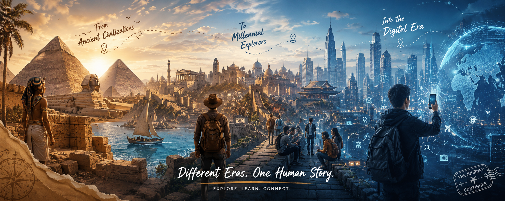

Selamat datang! Website ini akan menjelaskan perjalanan panjang sejarah peradaban manusia. Kita akan melihat perubahan besar pada cara bertahan hidup, cara berkomunikasi, hingga tatanan sosial di tiga era berbeda: Mesir Kuno, Milenial, dan Digitalisasi.